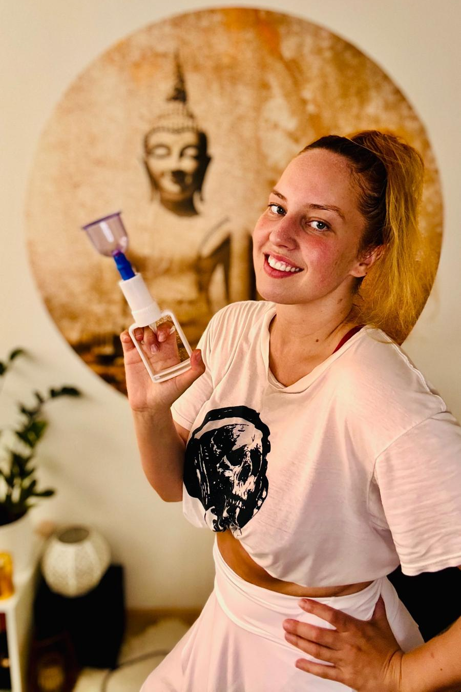

Masáže u Terry - Profesionální masérské služby Praha 11
Dopřejte svému tělu hlubokou regeneraci a mysli zasloužený klid. Profesionální masérské služby na Praze 11 - Háje. Certifikovaná masérka s dlouholetou praxí.
Chci se objednatDopřejte svému tělu hlubokou regeneraci a mysli zasloužený klid. Profesionální masérské služby na Praze 11 - Háje. Certifikovaná masérka s dlouholetou praxí.
Chci se objednat
Pohyb, fungování lidského těla a přirozené způsoby, jak si ulevit od bolesti, mě fascinují už od dětství. Vždy jsem věřila, že tělo má obrovskou schopnost regenerace, pokud mu porozumíme a dáme mu správnou podporu.
V roce 2019 jsem absolvovala několik odborných kurzů a začala se naplno věnovat masážím. Během své praxe jsem spolupracovala s firemními klienty, mimo jiné ve společnosti H1 a ve společnosti Publicis Groupe.
Velmi cennou zkušeností pro mě byla spolupráce s Centrum Paraple, kde jsem pracovala s klienty po poranění míchy a s lidmi žijícími s paraplegií či kvadruplegií. Právě zde jsem získala hlubší porozumění fungování nervového systému, významu fasciálních struktur a souvislostem mezi dlouhodobým svalovým napětím, spasticitou, chronickou bolestí a omezením pohybu.
Tato zkušenost mě naučila vnímat lidské tělo komplexně – neřešit pouze místo bolesti, ale hledat její skutečnou příčinu a souvislosti v rámci celého pohybového aparátu.
Ve své praxi se specializuji na práci s fasciemi, svalovými dysbalancemi, přetížením, spazmy a funkčními obtížemi nervosvalového systému. Každý klient je pro mě jedinečný, a proto ke každému přistupuji individuálně a v širších souvislostech.
Mým cílem není pouze krátkodobá úleva nebo příjemný relaxační zážitek. Zaměřuji se na skutečnou pomoc a dlouhodobé výsledky. Moje masáže jsou intenzivnější a terapeuticky zaměřené – někdy mohou být v určitých místech citlivější či mírně bolestivé, vždy však s respektem k vašim možnostem a aktuálnímu stavu.
Zakládám si na přátelském přístupu, pečlivosti a důkladnosti. Věřím, že otevřená komunikace, vzájemná důvěra a individuální péče jsou základem úspěšné terapie.
Pomohu vám lépe porozumět vašemu tělu, najít příčinu obtíží a vrátit se k pohybu bez bolesti.
Hloubková regenerační masáž je kombinace několika technik a cílená práce s tělem. Pracuji opravdu intenzivně do hloubky, a díky tomu je ošetření velmi účinné a přináší dlouhodobou úlevu. Nezaměřuji se pouze na místo, kde cítíte bolest, ale hledám její skutečnou příčinu – protože právě tam začíná opravdová změna.
Tato péče pomáhá ulevit od chronických potíží, zlepšuje flexibilitu a rozsah pohybu, podporuje regeneraci a zároveň přirozeně rozproudí lymfu. Tělo tak dostává prostor k hlubokému nastartování vlastních samoléčebných procesů a zároveň se posiluje jeho odolnost vůči přetížení i zraněním.
Každé ošetření je pro mě spolupráce – naslouchám vašemu tělu i tomu, co mi během terapie ukazuje. Mým cílem není jen krátkodobá úleva, ale skutečná změna, kterou pocítíte v každodenním životě.
Odcházet můžete s lehkostí, větší volností pohybu a pocitem, že vaše tělo dostalo přesně to, co potřebovalo.
Tato kombinace představuje ucelenou péči, která vrací tělo do jeho přirozené rovnováhy bez bolesti. Využití prvků Dornovy metody umožňuje za vaší aktivní účasti (jemného pohybu) šetrně nasměrovat obratle a klouby na jejich správné místo.
Navazující Breussova masáž je bezbolestná a jemná, přesto však velice intenzivní na energetické úrovni. Jde o hloubkový regenerační rituál, který působí jako balzám přímo na meziobratlové ploténky a nervovou soustavu. Tato technika dokáže okamžitě zklidnit mysl, odbourat hluboko uložený stres a nastartovat silné samoozdravné procesy v celém organismu.
Strukturální masáž obličeje a dekoltu není jen běžná kosmetická masáž, ale intenzivní terapeutická metoda vycházející z poznatků čelistně-obličejové chirurgie a fyzioterapie. Masíruje se hlava, hrudník, šíje a obličej. Hloubková práce s mimickými svaly, fasciemi a lymfou. Zjemňování rýh a vrásek.
Díky uvolnění svalového napětí dochází k přirozenému faceliftu: Neřeším jen následek (vrásku), ale její příčinu v hlubokých strukturách. Alternativa k invazivním zákrokům.
Uvolnění šíje a krční páteře. Uvolnění čelistního kloubu: Pomáhá při chronickém zatínání zubů a uvolňuje napětí žvýkacích svalů. Úleva od bolestí hlavy: Práce s fasciemi na lebce a úpony v oblasti týla zmírňuje tenzní bolesti. Svalová rovnováha: Koriguje asymetrie obličeje. Lymfatická drenáž: Aktivuje hloubkový odvod toxinů a zmírňuje otoky.
Doporučuji cca hodinu před masáží nejíst těžká jídla. Vše potřebné pro vás bude připraveno u mě ve studiu.
Vůbec nic. Ve studiu máte k dispozici čisté ručníky i prostěradla. Stačí přijít s dobrou náladou.
Masáž prosím odložte, pokud se cítíte nemocní, máte horečku, infekční onemocnění nebo akutní záněty.
Pro preventivní účely doporučuji masáž 1x za měsíc. Při řešení blokád je vhodné přijít 1x za 14 dní.
Adresa:
Hekrova 4,
149 00
Praha 11-Háje
Telefon:
+420 728 562 001
Dostupnost: 5 minut chůze od metra Háje (linka C). Bezproblémové parkování přímo v ulici Hekrova.